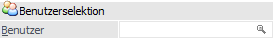
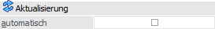
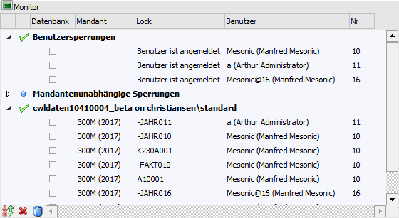
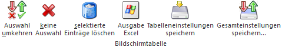
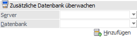
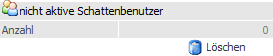

In dem Register "Monitor" werden alle WinLine-Locks für alle angebundenen Datenbanken angezeigt.

Benutzerselektion

Ø Benutzer
In diesem Feld kann ein bestimmter Benutzer eingetragen werden, dessen Locks im Monitor angezeigt werden sollen. Hierfür stehe eine Matchcodefunktion zur Verfügung.
Hinweis
Folgende Eingabevarianten sind möglich:
ü Bei Eingabe des Benutzernamens (Login) oder der Benutzernummer wird auf diesen Benutzer samt aller seiner Schattenbenutzer (wird durch "Weitere Instanz starten" erzeugt) eingeschränkt.
ü Bei Eingabe des Benutzernamens (Login) oder der Benutzernummer eines Schattenbenutzers wird exakt auf diesen eingeschränkt.
ü Wird das Eingabefeld leer gelassen, dann werden alle Benutzer samt ihrer Schattenbenutzer angezeigt.
ü Bei Eingabe eines nicht existierenden Benutzernamens (Login) oder einer nicht existierenden Benutzernummer wird das Eingabefeld wieder geleert und alle Benutzer samt ihrer Schattenbenutzer angezeigt.
Aktualisierung

Ø automatisch
Wenn diese Checkbox aktiviert wird, dann werden die Locks in regelmäßigen Abständen vom Programm automatisch neu eingelesen und angezeigt. Somit sind immer die aktuellen Locks ersichtlich.
Tabelle "Locks"

In der Tabelle werden folgende Informationen angezeigt:
ü Benutzersperrungen
Hier werden
alle Benutzer angezeigt, die in der WinLine zurzeit angemeldet sind. Als
Information wird der Benutzer (in Klammer steht der Benutzername) und die
Benutzernummer angezeigt. Wird der Benutzername mit dem Zeichen @ und einer
Nummer angezeigt, so handelt es sich dabei um einen sogenannten Schattenbenutzer
(wobei die Nummer die nächste freie Benutzernummer darstellt). Ein
Schattenbenutzer wird von der WinLine unter folgenden Umständen automatisch
angelegt bzw. verwendet:
ü Es wird vom Benutzer eine neue / weitere Instanz gestartet.
ü Der Benutzer loggt sich in die MWL ein.
ü Während des Einloggens in WinLine wird ein gestarteter WinLine Server gefunden, zu welchem die WinLine eine automatische Verbindung aufbaut (für die Funktion "Hintergrundprozess").
ü Es wird der Action-Server gestartet.
ü Mandantenunabhängige
Sperrungen
In diesem Bereich werden Locks angezeigt, die
mandantenübergreifend wirken. Beispiele dafür sind eine
Datenstandsaktualisierung oder das Verändern einer Publikation für die WEB
Edition. Neben den Benutzerinformationen wird angezeigt, welcher Bereich vom
Benutzer gelockt wird.
ü Datenbank
Im Anschluss werden
alle Datenbanken angezeigt, die im Zuge der WinLine bearbeitet werden. Dies
können auch mehrere Datenbanken sein. Hier wird neben der Benutzerinformation
auch noch der Mandant (in Klammer wird das WJ angezeigt) und die Aktion
angezeigt, die der Benutzer durchführt.
Bei jedem Benutzer-Eintrag kann eine Checkbox aktiviert werden, die ggf. für das Löschen von Locks benötigt wird.
Tabellenbuttons

Ø Auswahl umkehren
Mit diesem Button wird die Selektion in der Tabelle in das Gegenteil umgewandelt.
Ø keine Auswahl
Durch Anklicken dieses Buttons werden alle vorgenommenen Selektionen wieder aufgehoben.
Ø selektierte Einträge löschen
Durch Anklicken dieses Buttons werden alle ausgewählten (aktivierten) Locks aus der Tabelle gelöscht. Die übrigen Locks bleiben bestehen.
Ø Ausgabe Excel
Durch Anwahl des Buttons "Ausgabe Excel" wird der Inhalt der Tabelle nach Microsoft Excel übergeben.
Ø Tabelleneinstellungen speichern
Die Spalten einer Tabelle können grundsätzlich an beliebige Positionen verschoben, bzw. in der Breite entsprechend angepasst werden. Durch Anwahl des Buttons "Tabelleneinstellungen speichern" werden die Einstellungen benutzerspezifisch gespeichert und bei dem nächsten Aufruf des Programmpunktes wieder vorgeschlagen.
Ø Gesamteinstellungen speichern
Im Gegensatz zu "Tabelleneinstellungen speichern" können mit "Gesamteinstellungen speichern" mehrere Tabellenaufbauten gespeichert und nach Wunsch geladen werden. Zusätzlich werden Sonderfunktionen der Tabelle (z.B. "Spalte gruppieren") ebenfalls bei der Speicherung bedacht.
Zusätzliche Datenbank überwachen

Unter bestimmten Umständen kann es vorkommen, dass aus einem Mandanten oder aus einer Datenbank Locks nicht entfernt wurden (Stromausfall, Absturz etc.). Ist dies der Fall, können diese Locks ebenfalls entfernt werden. Dazu könnte es aber notwendig sein, auf eine andere Datenbank zuzugreifen, die nicht in der Liste angeführt ist. Zu diesem Zweck können die nachfolgend beschriebenen Felder benutzt werden:
Ø Server
In diesem Feld kann mit Hilfe einer Auswahlliste der SQL-Server eingegeben werden, auf den zugegriffen werden soll.
Ø Datenbank
In diesem Feld wird die Datenbank eingetragen, die im Monitor mit angezeigt werden soll. Die zur Verfügung stehenden Datenbanken ergeben sich aus dem zuvor gewählten Server.
Ø Hinzufügen
Durch Anklicken des Buttons "Hinzufügen" wird die eingetragene Datenbank in der Tabelle ebenfalls angezeigt. Dazu werden (sofern vorhanden) auch die entsprechenden Locks angezeigt.
nicht aktive Schattenbenutzer

Ø Anzahl
Im Feld "Anzahl" wird die Anzahl der Schattenbenutzer (Schattenbenutzer werden angelegt, wenn ein Benutzer in die WinLine mobile einsteigt oder wenn in der WinLine eine neue Instanz geöffnet wird) angezeigt, die zwar noch im Monitor vorhanden sind, die aber nicht mehr aktiv im Programm arbeiten. Das kann dann passieren, wenn der Benutzer seine Programme nicht ordnungsgemäß beendet hat.
Ø Löschen
Durch Anklicken des Löschen-Buttons können die nicht aktiven Schattenbenutzer entfernt werden. In diesem Zusammenhang werden dann auch ggf. vorhandene Einträge aus der MSM-Tabelle entfernt.